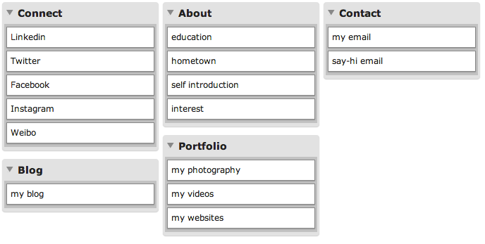
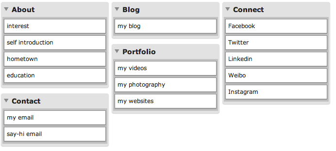
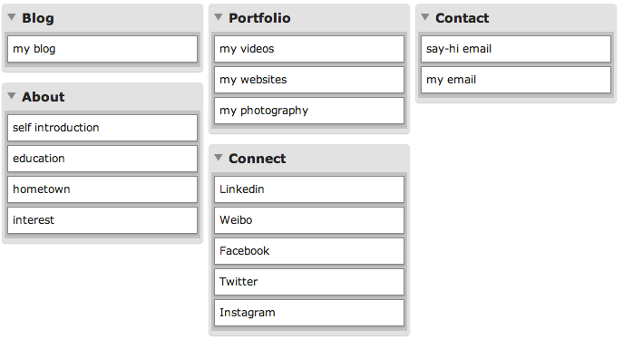
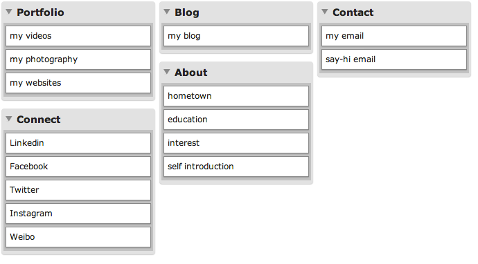
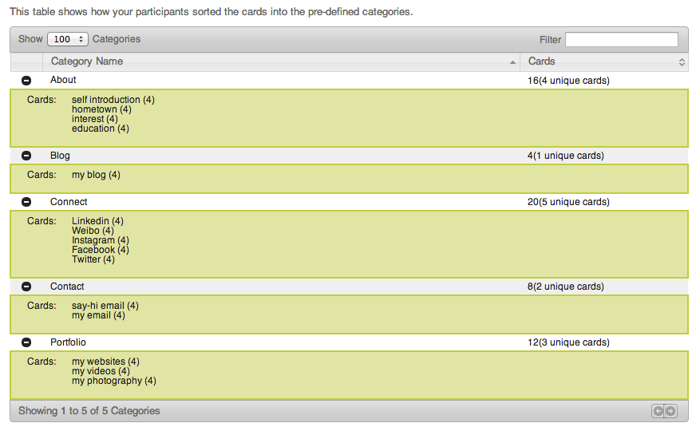
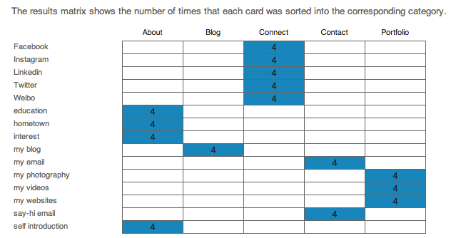
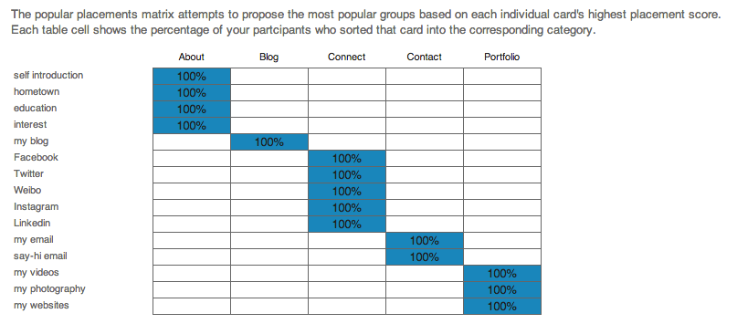

I would like to design a personal website, which is used to show my information, my intersts, and my portfolio.
| Results |
| My result |
|  |
| Participant 1 |
|  |
| Participant 2 |
|  |
| Participant 3 |
|  |
| Analysis |
| Categories |
|  |
| Results Matrix |
|  |
| Popular Placement |
|  |
| Comments |
| This time, different from the NASA's Moon wensite card sorting, I lauched the card sorting for my personal page as a closed one, which has certain categories and requires participants to put cards under categories. The reults of card sorting are exactly the same among the three other participats and me. I think it is due to the closed sorting and the small number of cards. Finally, "self introduction", "education", "hometown" and "interests" go under the "About" category; "my blog" goes under the "Blog" category; "Linkedin", "Weibo", "Facebook", "Twitter" and "Instagram" go under Category "Connect"; "say-hi email" and "my email" belong to "Contact"; "my websites", "my videos" and "my photography" go under the "Portfolio" category. |